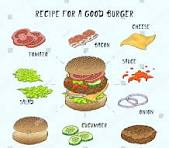
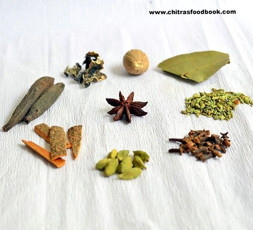
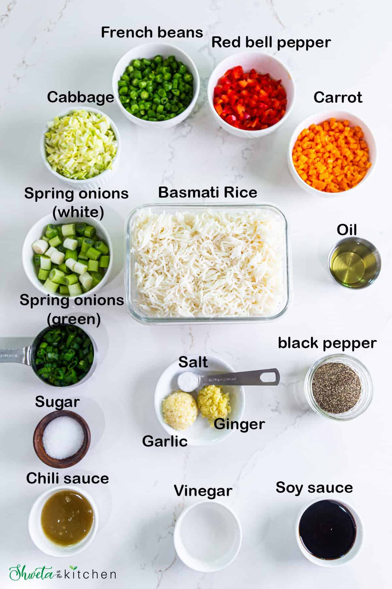

Food Festivel
Burger

- Chicken Burger
- Onion Burger
- veggie Burger
- Cheese Burger
A burger, is a dish consisting of fillings—usually a patty of ground meat, typically beef—placed inside a sliced bun or bread roll. The patties are often served with cheese, lettuce, tomato, onion, pickles, bacon, or chilis with condiments such as ketchup, mustard, mayonnaise, relish or a "special sauce", often a variation of Thousand Island dressing, and are frequently placed on sesame seed buns. A hamburger patty topped with cheese is called a cheeseburger.[1] Under some definitions, and in some cultures, a burger is considered a sandwich.
Chicken

- Masala
- Tandoori
- Panjabi Chiken tikka
Chicken tikka is a chicken dish popular in India, Bangladesh, Pakistan and the United Kingdom.[1] It is traditionally small pieces of boneless chicken baked using skewers on a brazier called angeethi or over charcoal after marinating in Indian spices and dahi (yogurt)—essentially a boneless version of tandoori chicken.[2] The word tikka (tike in Turkish, and tikə in Azerbaijani) is a Persian word, meaning "bits" or "pieces". It is also a chicken dish served in Punjabi cuisine. The Kashmiri version of the dish, however, is grilled over red-hot coals, and does not always contain boneless pieces. The pieces are brushed with ghee (clarified butter) at intervals to increase its flavour, while being continuously fanned. It is typically eaten with green coriander and tamarind chutney served with onion rings and lemon, or used in preparing an authentic chicken tikka masala.[3]
Rice

- Biryani
- Jira
- Curd Rice
- Fried Rice
Chicken and rice is a common food combination in several cultures which have both chicken and rice as staple foods. Examples include:
Arroz con pollo, a Latin American dish
Chikin raisu (chicken rice, rice pan-fried with ketchup and chicken) (ja), an ingredient in Japanese omurice
Claypot chicken rice, a clay pot dish popular in China, Malaysia, and Singapore
Hainanese chicken rice, a Singaporean dish created by Hainanese immigrants
KFC rice, a Japanese dish of rice steamed with fried chicken in a rice cooker
The Chicken Rice Shop, a Malaysian restaurant chain specializing in Hainanese chicken rice
Food Details
| Dish |
Test |
Rating |
Made in |
Ingredients |
| Burger |
Spicy |
8.4 |
Frank and Charles Menches |
 |
| Chiken |
Spicy |
9.5 |
Hadrabad |
 |
| Rice |
Spicy |
9.0 |
Kerla, tTelgu |
 |